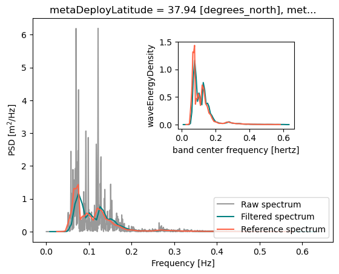
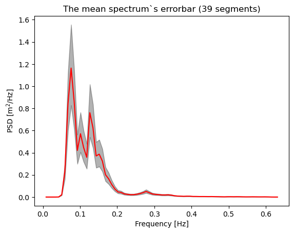

Spectral Analysis on Geophysical Data#
On the previous notebook we saw the easiest case of spectral analysis (distinct frequencies). Here we will push further the complexity by analysis real wave data. This analysis rely on wave elevation recorded by a buoy of the Costal Data Information Program (CDIP, same dataset used in the previous notebook). I made the choice to focus on data collected by the buoy offshore the San Francisco Bay, however, the present notebook can be applied to all the buoys of the program.
Practically speaking, in this Notebook we perform:
Download one-dimensional wave data
Apply window over the signal to remove the spectral leakage
Perform the Fourier Analysis
Compute the Power Spectral Density of the signal
Correct the windowing process, cc Parseval’s theorem
Interpret the wave spectrum
Compute the uncertainty of the spectrum
import numpy as np
import xarray as xr
import matplotlib.pyplot as plt
from scipy.signal import find_peaks
from scipy.stats.distributions import chi2
Functions for the Spectral Analysis#
def create_UTC_axis(ds_xyz, arrayIndex):
"""
Purpose: Create the time axis associated to the motion along x, y, and z dimension
----------
inputs:
--------
ds_xyz: the xarray dataset that contain the motions
arrayIndex: The array of second
output:
--------
time_array: datetime64 object in s.
"""
arrayIndex = xr.DataArray(arrayIndex, attrs={'units': 'nb_of_obs'}).astype('timedelta64[s]')
sample_rate_sec = xr.DataArray(ds_xyz.xyzSampleRate.values, attrs={'units': 'hz'}).astype('timedelta64[s]')
filter_delay_sec = xr.DataArray(ds_xyz.xyzFilterDelay.values, attrs={'units': 's'}).astype('timedelta64[s]')
time_axis = xr.DataArray(arrayIndex/sample_rate_sec, attrs={'units': 's'}).astype('timedelta64[s]')
time_array = ds_xyz.xyzStartTime.values + time_axis - filter_delay_sec
return time_array
def wave_frequency_spectrum(elevation, Fs = 1.2):
"""
Purpose: Perform the frequency spectrum of the elevation signal
----------
inputs:
--------
elevation: the motion along z (elevation induced by waves)
Fs: The sampling frequency
output:
--------
freq: the frequency axis
spec_corr: the wave frequency spectrum. _corr stand for correction of the windowing
"""
nfft = len(elevation) # The number of point for the spectral analysis
Nf = int(nfft/2 + 1) # The number of frequencies
# Nf = 200
df = Fs/nfft # The spectral resolution
freq = np.linspace(df, df*(Nf-1), (Nf-1)) # Define the frequency axis
#########
# --- The heart of the spectral analysis
#########
hanningt = 0.5 * (1-np.cos(2*np.pi*np.linspace(0, nfft-1, nfft)/(nfft-1))) # Hanning window
wc2t = 1/np.mean(hanningt**2) # Correction factor
Zw = (elevation-np.mean(elevation)) * hanningt # Apply the window to avoid spectral leakage (put to 0 the extrema) + detrend
Zf = np.fft.fft(Zw, nfft, axis = 0)/nfft # Apply the Fourier Transform
spec = abs(Zf)**2 / df # Compute the power spectral density
spec_folded = 2 * spec[1:Nf]
hs_spec = 4 * np.sqrt(np.sum(spec_folded)*df)
#print(f'The significant wave height associated to the spectrum is {hs_spec} m')
#print('\n')
#print(f'The significant wave height associated to the elevation is {4 * np.sqrt(elevation.var())} m')
spec_corr = spec_folded * wc2t # Correct the spectrum
hs_spec_corr = 4 * np.sqrt(np.sum(spec_corr)*df)
#print(f'The significant wave height associated to the spectrum is {hs_spec_corr} m')
return freq, spec_corr
def wave_frequency_spectrum_overlap(elevation, overlap, nfft, Fs = 1.2):
"""
Purpose: Perform the frequency spectrum of the elevation signal with the signal cut in segments with overlap
----------
inputs:
--------
elevation: the motion along z (elevation induced by waves)
overlap: the overlap between segments in %
nfft: tthe number of point per segments
Fs: The sampling frequency
output:
--------
freq: the frequency axis
spec_corr_mean: the mean wave frequency spectrum. _corr stand for correction of the windowing
"""
Nf = int(nfft/2 + 1) # The number of frequencies
NS1 = len(elevation)//nfft # The number point per segment
ov = overlap/100 # percentage of overlap between segments
NS = NS1 * (1 + 2*ov) - 2 * ov # number of point per segment
Eh = np.ones((int(NS), 1)) # Initialize array of NS pts
hanningt = 0.5 * (1-np.cos(2*np.pi*np.linspace(0, nfft-1, nfft)/(nfft-1))) # Hanning window
H = hanningt * Eh # 1d window
elevmat = np.zeros((nfft, int(NS))) # initialize matrix of length of spectrum times n_seg
vec_i = np.arange(0, NS, 1)
print(f'We chunk the signal into {int(NS)} windows')
df = Fs/nfft # frequency resolution
# freq = np.linspace(df, df*(Nf-1), (Nf - 1)) # frequency axis
for iw in range(len(vec_i)): # fill matrix of sub sample
nstart = np.floor((iw-1+1)*(1 - ov) * nfft)
nend = nstart + nfft
elevmat[:, iw] = elevation[int(nstart):int(nend)]
Nf2 = len(elevmat[:, -1])//2 # I take the last window, but any one work
freq = np.linspace(df, df*(Nf2-1), (Nf2)) # frequency axis
elevmat2 = elevmat.T
wc2t = 1/np.mean(hanningt**2) # correction factor
Zw = (elevmat2-np.mean(elevmat2)) * hanningt # Windowed signals + remove trend
Zf = np.fft.fft(Zw, nfft, axis = 1)/nfft # Fourier transform of the windowed signals
spec = abs(Zf)**2 / (df) # Power spectral density of the spectra
spec_folded = 2 * spec[:, 0:np.size(spec, axis = 1)//2] # Fold the spectrum
spec_corr = spec_folded * wc2t # correct the spectrum because of window
spec_corr_mean = np.mean(spec_corr, axis = 0).T # mean spectrum
return freq, spec_corr_mean
def confident_interval_spec_95(Ef, n_spec):
""" The 95% confident interval of the spectrum
input:
Ef: The Power Spectral Density (PSD)
n_spec: Number of spectra used for the mean PSD
outputs:
Ef_low: The low PSD
Ef_up: The up PSD
"""
low_bound=0.025
up_bound=0.975
Ef_low=chi2.ppf(low_bound, df=2*n_spec)*Ef/(2*n_spec)
Ef_up=chi2.ppf(up_bound, df=2*n_spec)*Ef/(2*n_spec)
return Ef_low,Ef_up
Load data#
file_url_data = './data/motion_wave_data_cdip.nc'
file_url_param = './data/spectral_wave_data_cdip.nc'
ds_buoy = xr.open_dataset(file_url_data)
ds_operationel = xr.open_dataset(file_url_param)
n_data = 3000
start_index = 0
# arrayIndex = np.linspace(0, n_data, n_data) # an array of ~ 30 min
arrayIndex = np.linspace(start_index, start_index+n_data, n_data)
time_UTC = create_UTC_axis(ds_buoy, arrayIndex)
elevation = ds_buoy.xyzZDisplacement[:len(arrayIndex)] # work on a 30 min window
# elevation2 = ds_buoy.xyzZDisplacement[len(arrayIndex):len(arrayIndex)*2] # work on a 30 min window
time_UTC
<xarray.DataArray (dim_0: 3000)> Size: 24kB
array(['2025-09-06T21:57:47.000000000', '2025-09-06T21:57:48.000000000',
'2025-09-06T21:57:49.000000000', ...,
'2025-09-06T22:47:44.000000000', '2025-09-06T22:47:45.000000000',
'2025-09-06T22:47:47.000000000'],
shape=(3000,), dtype='datetime64[ns]')
Dimensions without coordinates: dim_0ds_operation_sel = ds_operationel.sel(waveTime = slice(time_UTC[0], time_UTC[-1])) # Select a record length of n_data obs.
mean_spec_operational = ds_operation_sel.waveEnergyDensity.mean(dim = 'waveTime') # get the mean reference spectrum
fmax = ds_operationel.waveFrequency.max().values # get the highest frequency in the reference Dataset
fs = 2*fmax # the sampling frequency is twice the highest frequency resolved in the reference dataset (Nyquist)
The wave elevation signal. The signal we are processing.#
freq_raw, spec_raw = wave_frequency_spectrum(elevation.values, ds_buoy.xyzSampleRate.values) # The raw spectral analysis
freq_smooth, spec_corr_mean = wave_frequency_spectrum_overlap(elevation.values, 50, 150, Fs = ds_buoy.xyzSampleRate.values) # The Welch Method
We chunk the signal into 39 windows
This method of chunk the total signal into sub-signal is called the Welch’s method. Don’t forget to window all the chunks to avoid spectral leakage.
Plots the Spectra#
fig, ax = plt.subplots()
ax_inset = fig.add_axes([.5, .5, .3, .3])
ax.plot(freq_raw, spec_raw, color = 'k', alpha = .4, label = 'Raw spectrum')
ax.plot(freq_smooth, spec_corr_mean, color = 'teal', label = 'Filtered spectrum')
mean_spec_operational.plot(ax = ax, color = 'tomato', label = 'Reference spectrum')
ax.legend(loc = 4)
ax_inset.plot(freq_smooth, spec_corr_mean, color = 'teal')
mean_spec_operational.plot(ax = ax_inset, color = 'tomato')
ax.set_xlabel('Frequency [Hz]')
ax.set_ylabel('PSD [m$^2$/Hz]')
ax_inset.set_title('')
Text(0.5, 1.0, '')

Wave characteristics: let’s spot the dominant wave frequencies (periods) and the significant wave height#
peaks_spectrum = find_peaks(spec_corr_mean, height = .2)[0] # here, the present height threshold is only applicable for this record
df = np.gradient(freq_smooth)
hs_raw = 4*np.sqrt(np.nanvar(elevation))
hs_spec = 4*np.sqrt(np.nansum(spec_corr_mean*df))
hs_ope = ds_operation_sel.waveHs.mean(dim = 'waveTime').values
print(f'There are {len(peaks_spectrum)} peaks in the spectrum centered at {freq_smooth[peaks_spectrum]} Hz which are associated with {1/freq_smooth[peaks_spectrum]} sec period')
print('\n')
print(f'The significant wave heigth from the raw elevation signal is {hs_raw} m and {hs_spec} m from the spectrum. The reference dataset yields {hs_ope} m')
print('\n')
print('So we did a pretty good job!!!')
There are 4 peaks in the spectrum centered at [0.07587748 0.10113154 0.12638558 0.15163964] Hz which are associated with [13.179141 9.888112 7.912295 6.5945816] sec period
The significant wave heigth from the raw elevation signal is 1.0830532312393188 m and 1.0741991975847065 m from the spectrum. The reference dataset yields 1.090000033378601 m
So we did a pretty good job!!!
In deep water the wavenumbers (inverse of the wavelength) and the wave frequencies) are related by the following deep water relationship: \(2\pi f\) = \(\sqrt{gk}\) with g the acceleration of gravity (units: m/s2) and k the wavenumber (units:1/m).
g = 9.81 # acceleration due to gravity
f = np.array([0.07587748, 0.10113154, 0.12638558, 0.15163964]) # peak frequenices spotted above
k = (2*np.pi*f)**2/g
lambda_p = 2*np.pi/k
print(f'One wavelength of the wave systems spotted above are {lambda_p} m long')
print('\n')
print(f'Can we use the deep water approximation? Verify the product kD, with D the depth below the depth')
kD = k * ds_buoy.metaWaterDepth.values # the second is the depth
print(f'kD = {kD} dimensionless')
One wavelength of the wave systems spotted above are [271.1835497 152.6567098 97.74489567 67.89904244] m long
Can we use the deep water approximation? Verify the product kD, with D the depth below the depth
kD = [12.74322105 22.637406 35.35480697 50.8954441 ] dimensionless
Yes we had the right to use the deep water approximation
Results#
We are able to reproduce the spectrum provided by CDIP quite well with our analysis. However, a noticeable shift exists between the blue and red spectra. This can be explained by differences in the frequency axis — which can be verified by interpolating our axis onto theirs — and by the fact that we did not use the exact same input signal. It is also possible that our signal is slightly shifted in time.
We identify N peaks in the spectrum, centered around (see above) Hz. These peaks correspond to distinct wave systems. The lowest-frequency peak represents the swell, which is generated remotely and is independent of local wind conditions. The higher-frequency peaks likely correspond either to another distant swell or to a locally generated wind sea. Wind-sea waves are shorter, wind-dependent waves that result in a choppier sea surface. One can note that we have characterized the wave field using only Nf spectral values (length[PSD(f)]), while the original time series contained about 3000 data points. In the present context—where our goal is to derive key parameters such as the dominant wave periods and the significant wave height (\(H_s\))—saving the full wave spectrum is not necessary. Only a few values are sufficient (four in our case, corresponding to three dominant periods and one \(H_s\)). Representing the wave field through spectra is therefore far more efficient than storing the raw elevation data.
Here we are in deep water regime, so one can wonder how long those waves are. Knowing the wavelength we can actually double-check if we are in a deep water regime.
Uncertainties#
As with any mean of random variables (in this case, spectra), the resulting mean spectrum is associated with an uncertainty. More precisely, the mean corresponds to the average of a variance. According to Cochran’s theorem, the sample variance follows a \(\chi^{2}\) distribution with N degrees of freedom. Based on Gaussian statistics, the upper and lower 95% confidence bounds for the spectral density, \(\mathrm{PSD}(f)\), are determined from the corresponding quantiles of the \(\chi^{2}\) distribution. The uncertainty decreases as the number of degrees of freedom increases. Here, the number of degrees of freedom is equal to twice the number of independent segments (or windows) averaged to compute the mean spectrum.
PSD1, PSD2 = confident_interval_spec_95(spec_corr_mean, 39)
fig, ax = plt.subplots()
ax.fill_between(freq_smooth, PSD1, PSD2, alpha = .3, color = 'k')
ax.plot(freq_smooth, spec_corr_mean, color = 'r')
ax.set_xlabel('Frequency [Hz]')
ax.set_ylabel('PSD [m$^{2}$/Hz]')
ax.set_title('The mean spectrum`s errorbar (39 segments)')
Text(0.5, 1.0, 'The mean spectrum`s errorbar (39 segments)')
